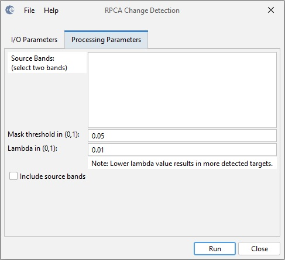

RPCA Change Detection
This operator implemented a
Robust Principal Component Analysis (RPCA) based change detection
algorithm as given in [1].
Robust principal component analysis
(RPCA) is a powerful data analysis tool which decomposes a given matrix
into two parts: a low rank matrix and a sparse matrix. When applied to
an image, RPCA decomposes the image into two parts: one related to the
background and one related to the targets. In the context of change
detection, the RPCA is applied to a matrix formed by a pair of
vectorized images. The sparse content in the decomposition result can
be separated into two parts corresponding to the targets in both
images. Users can further improve the detection result by applying
thresholding or any morphological operations to the target images.
Input
- The input to this operator could be a coregistered stack of Sentinel-1 IW GRD products.
Output
- The output are the target bands corresponding to the input images.
Parameters Used
The following parameters are used by the operator:
- Source Bands: All bands of the source product. User can
select two bands for change detection. If no bands are selected, then
by default all bands are used.
- Include source bands: if the checkbox is selected, all
bands of the source product will be included in the target product
together with the bands of the detected targets.

Figure 1. RPCA Change Detection dialog box
Reference:
[1] Schwartz, C.; Ramos, L.P.; Duarte, L.T.; Pinho, M.d.S.;
Pettersson, M.I.; Vu, V.T.; Machado, R. Change Detection in UWB SAR
Images Based on Robust Principal Component Analysis. Remote Sens. 2020,
12, 1916.